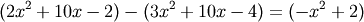

numpy.polysub¶
- numpy.polysub(a1, a2)¶
Difference (subtraction) of two polynomials.
Given two polynomials a1 and a2, returns a1 - a2. a1 and a2 can be either array_like sequences of the polynomials’ coefficients (including coefficients equal to zero), or poly1d objects.
Parameters : a1, a2 : array_like or poly1d
Minuend and subtrahend polynomials, respectively.
Returns : out : ndarray or poly1d
Array or poly1d object of the difference polynomial’s coefficients.
Examples

>>> np.polysub([2, 10, -2], [3, 10, -4]) array([-1, 0, 2])